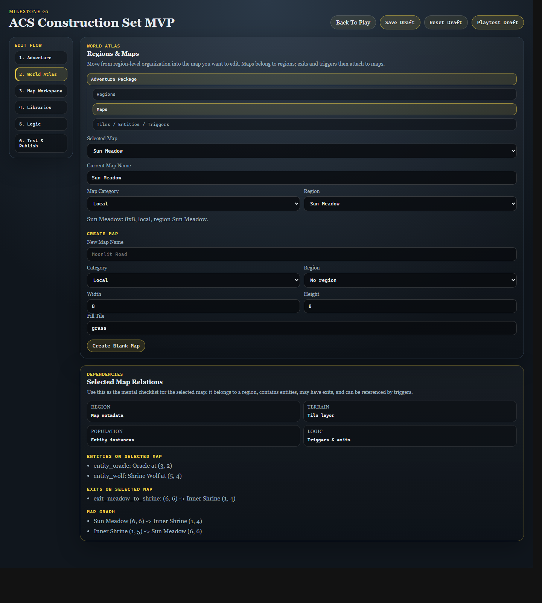
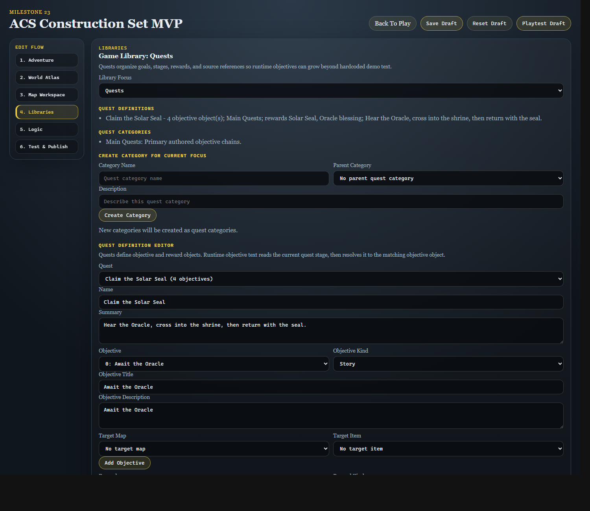
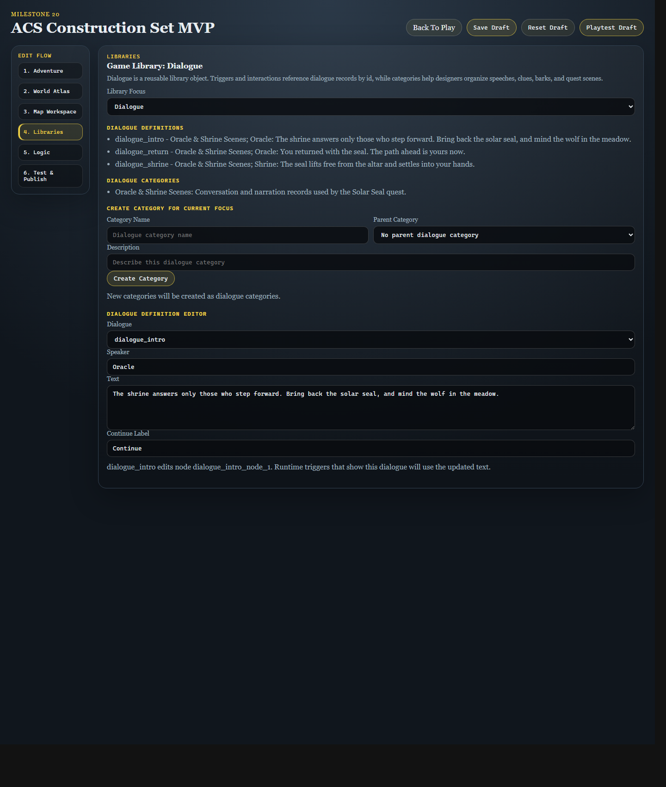
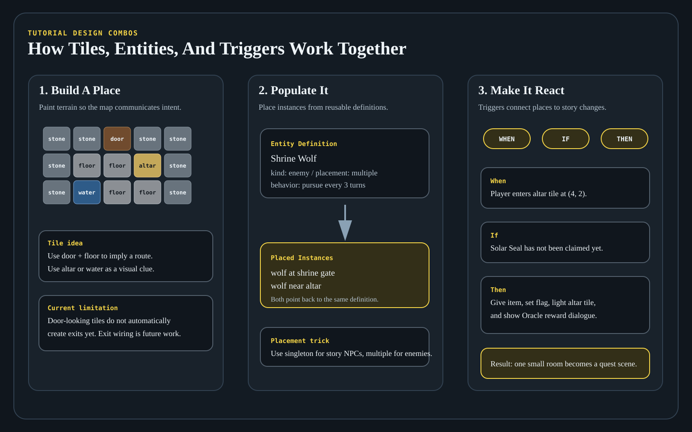

ACS Milestone 21
User Guide
This guide explains how to run the current application, use the classic ACS visual mode, play the sample adventure, save progress, use the editor, validate drafts, and move from a local draft to a published release.
- The playable runtime at
apps/web/index.html - The browser editor at
apps/web/editor.html - The local project, validation, and release API at
apps/api/dist/index.js

Starting The Application
Build the workspace if needed, then start both servers from the repo root.
Web Server
node .\apps\web\server.mjsDefault URL:
http://localhost:4173/Common alternate URL in this environment:
http://localhost:4317/API Server
node .\apps\api\dist\index.jsLocal API check:
http://localhost:4318/api/sessionEditor URL
http://localhost:4317/apps/web/editor.htmlPlaying The Game
The runtime can load the built-in sample adventure, a local draft playtest, or a published release.
- Speak to the Oracle.
- Enter the shrine.
- Claim the Solar Seal.
- Return to the Oracle.
WASDor arrow keys moveEinteractsQinspectsEnter,Space, orEadvances dialogue- Arrow keys scroll longer dialogue while Classic ACS dialogue is active
- Map and player position
- Session source
- Objective panel
- Save controls
- State summary and event log
Successful player actions advance the turn count, but blocked movement does not give enemies a free action. Enemy behavior can define a turnInterval; the sample Shrine Wolf acts every third successful player turn, giving you room to maneuver instead of shadowing every step.
Saving And Loading Progress
The runtime uses separate local save slots for the sample adventure, draft playtests, and published releases.
- Save stores the current runtime snapshot in IndexedDB.
- Load restores the most recent snapshot for the current source. The runtime starts fresh from the adventure start state and does not automatically restore saves on page load.
- Reset restarts the live session without deleting the saved snapshot.
Using The Editor
Open the editor at http://localhost:4317/apps/web/editor.html.

The current editor supports metadata editing, tile painting with a persistent brush, reusable tile definition editing, adding and repositioning entity instances, reusable entity definition editing, dialogue text editing, structured trigger editing, map structure editing, blank map creation, shared validation summaries, API-side Validate Draft checks, local draft saves, backend project saves, publishing releases, and opening those releases in the runtime.
Back To PlaySave DraftReset DraftPlaytest Draft
World Atlaschooses the current map because maps belong to the region/adventure hierarchyLayer Modeswitches between Terrain Tiles and Entity InstancesTilepicks the tile to paintMove Entitypicks the existing entity to moveAdd Definitionchooses the reusable entity definition to placePlace Newswitches entity mode into new-instance placementActive Brushshows the tile brush or entity placement target
Organized Edit Game Screen
The editor is now organized around the way game information relates: Adventure, World Atlas, Map Workspace, Libraries, Logic, and Test & Publish.
Edit Flownavigation moves through the major authoring areas.World Atlascontains region/map thinking: selected map, category, region assignment, and blank-map creation.Map Workspacecontains grid-centered work for terrain tiles and entity instances.Dependenciesshows the selected map's relationship checklist: region, terrain, population, logic, and exits.Librariescontains reusable definitions and dialogue records.Logic & Questscontains trigger editing shaped aroundWhen / If / Then.Test & Publishcontains validation, project saving, publishing, and release opening.
Tile Editing
- Choose
Tilesmode. - Select a tile id from the dropdown.
- Check the
Active Brushpreview to confirm the selected tile. - Click a cell in the grid to paint a single tile, or click and drag to paint across multiple cells.
The selected tile stays loaded like a brush until you choose a different tile.
Tile Definition Editing
Tiles are now library objects, not just visual strings in a map layer. In Libraries, choose Tiles from Library Focus to edit reusable terrain definitions.
Nameis the designer-facing label.Passabilitycan bepassable,blocked, orconditional.DescriptionandInteraction Hintexplain what the tile represents.Tagsorganize terrain such as barriers, relics, water, or sci-fi objects.Classic Spritemaps the logical tile to the current Classic ACS presentation without hardcoding future HD or 3D art.
Entity Editing
Entity mode supports both moving existing instances and placing new instances from reusable definitions.
- Choose
Entitiesmode. - To move an instance, pick it from
Move Entityand click a destination cell. - To add a new instance, choose a definition from
Add Definition, clickPlace New, then click a destination cell.
singletondefinitions can appear once in the adventure. The Oracle is singleton.multipledefinitions can be placed repeatedly. The Shrine Wolf is multiple.- Validation reports a blocking error if a singleton definition has more than one instance.
Editing World Structure And Creating Maps
The World Structure panel edits the selected map name, category, and region assignment. The Create Map controls create a new blank map with a chosen category, optional region, width, height, and fill tile. Milestone 14 does not yet create exits automatically; map wiring remains future work.
Editing Dialogue And Triggers
The Dialogue Library Focus edits existing dialogue records. The Rule Trigger panel edits existing trigger records, including type, optional map/x/y location, run-once behavior, conditions JSON, and actions JSON. These JSON areas are structured package data, not executable scripts; invalid JSON is rejected until corrected.
Validation
The validation panel runs the shared validation package and shows an error-and-warning summary plus a detailed issue list for the current draft. Use Validate Draft in the Project & Release panel when you want the local API to run the same validation report the publish flow uses. Blocking errors keep project save and publish actions disabled until they are fixed.
Tutorial: Try Every Current Feature
This walkthrough is the recommended smoke test after each milestone. It exercises every major feature currently available, highlights the newest Milestone 21 tile definition workflow, and shows how tile, entity, dialogue, and trigger edits can combine into a miniature quest scene.
You will play the sample adventure, switch visual modes, test save/load/reset, edit metadata, use the organized Edit Flow screen, create a map, paint tiles, author exits, review the map graph, move and place entities, edit definitions, edit dialogue, edit triggers, create and place trigger markers, validate, save, publish, and open a release.

1. Start Both Servers
node .\apps\web\server.mjsnode .\apps\api\dist\index.jsOpen the runtime at http://localhost:4317/apps/web/index.html and the editor at http://localhost:4317/apps/web/editor.html. The runtime is the player-facing game screen; the editor is the construction set; the API enables validation, project saving, publishing, and release loading.
2. Play The Sample Adventure First
- Confirm
Visual Modeis set toClassic ACS. - Move with
WASDor the arrow keys. - Walk next to the Oracle and press
Eto interact. - Press
Enter,Space, orEto advance dialogue without leaving the keyboard. - Press
Qnear the Oracle or on a tile to inspect. - Use the door tile to enter the Inner Shrine.
- Move to the altar to claim the Solar Seal.
- Return to the Oracle and interact again.
Watch the side panels and event log. Movement changes position and turn count. Classic ACS dialogue appears in the bottom message band and can be scrolled with arrow keys when it wraps; Debug Grid uses a separate dialogue panel. The altar trigger changes flags, inventory, and tile state. Enemy turns advance only on their configured cadence.
3. Try Runtime Save, Load, Reset, And Visual Mode
- Click
Saveafter moving a few steps. - Move somewhere else, then click
Loadand confirm the saved position is restored. - Click
Reset, then clickLoadagain to confirm the saved snapshot still exists. - Switch from
Classic ACStoDebug Grid, then back toClassic ACS.
This proves visual mode is presentation-only and persistence stores a runtime snapshot rather than a second copy of map data.
Latest Milestone Highlight: Tile Definitions And Terrain Behavior
Milestone 21 makes terrain behavior reusable library data. A painted cell still stores a tile id, but that id now resolves to a TileDefinition with passability, hints, tags, categories, and classic sprite mapping. The editor authors the definition, validation checks references, runtime-core blocks movement into blocked terrain, and runtime-2d uses the classic sprite mapping for the current presentation mode.

- Open
Librariesand setLibrary FocustoTiles. - Select
Water,Shrub, orStoneand confirmPassabilityisblocked. - Create a new tile named
Force Field. - Set
Passabilitytoblocked, add a hint such asThe humming wall rejects your hand., and tag itbarrier,sci-fi, andenergy. - Set
Classic Spriteto an existing sprite such aswateruntil richer art packs arrive. - Return to
Map Workspace, paint the Force Field as a barrier, thenPlaytest Draftand confirm the player cannot walk through it.
Previous Milestone Highlight: Exits, Portals, And Map Graphs
Milestone 20 made map-to-map travel an authored construction-set feature. Exits live on maps as data, the editor can create or update them from the grid, and the runtime consumes the same exit records during movement. That keeps the engine independent from the visual mode: a classic door tile, a sci-fi teleporter pad, an urban subway hatch, and a castle gate can all be the same logical exit with different presentation.
- Open
Map Workspace. - Set
Layer ModetoExits & Portals. - Choose
Inner Shrineas theTarget Map, withTarget Xset to1andTarget Yset to4. - Click the Sun Meadow door cell at
(6, 6)to inspect the existing shrine exit, or click another cell to create a new portal. - Read
Exits On Selected MapandMap Graphin the Dependencies panel to confirm the outgoing link and the return link.
Previous Milestone Highlight: Map Context And Classified Libraries
Milestone 19 made the focused editor workflow more self-contained. You no longer have to return to World Atlas just to change the map being edited: Map Workspace now has its own Map selector, and Logic has a Current Map Context selector.
The Libraries panel now has a Library Focus selector. This is the first visible layer of the new organizing principle for reusable game-wide objects.
Entities: reusable NPC, enemy, container, and player templates.Items: possessable objects such as relics, quest items, future weapons, treasure, tools, and consumables.Skills: reusable capabilities that entity profiles reference by ID instead of typed strings.Dialogue: reusable conversation/narration records that triggers and interactions reference by id.Flags: named state variables that trigger conditions/actions select from instead of freeform flag names.Quests: authored objective chains that can be classified and referenced by triggers.Traits,Spells,Tiles,Assets, andCustom: future-facing object classes that can already receive categories.

Try this in the tutorial: open Libraries, switch Library Focus between Entities, Items, Skills, Dialogue, Flags, Quests, and the future-facing library kinds. The title, help text, focused object list, category list, category creator, and editor visibility should change with the selected focus. Under Items, confirm Solar Seal appears as an item definition; under Dialogue, confirm the Oracle and shrine dialogue records appear as categorized reusable objects.
Latest Milestone Highlight: Focused Editor Workspaces
Milestone 18 changes the editor into a workspace switcher. Use the left Edit Flow navigation to choose one design area at a time. This keeps the screen from showing every possible data panel at once.
- Click
World Atlasto choose or create maps and review map/region relationships. - Click
Map Workspaceto paint terrain, place entities, or attach trigger markers on the selected map. - Click
Librarieswhen you want reusable definitions such as entity templates and dialogue text. - Click
Logicwhen you want the trigger builder, trigger markers, dialogue references, and rule details. - Click
Test & Publishwhen you are ready to validate, save, publish, or open a release.
The important mental model is that the navigation does not create separate copies of the adventure. Every panel edits the same draft package; the editor is simply showing the slice of the construction set that matches your current design task.
4. Understand The Organized Editor Flow
Use the editor from left to right: Edit Flow navigation, Adventure Setup, World Atlas, Map Workspace, Dependencies, Libraries, Logic & Quests, and Test & Publish.
Adventure -> Regions -> Maps -> Tiles / Entities / TriggersReusable libraries sit beside that hierarchy because maps and triggers reference them.
5. Edit Metadata In Adventure Setup
- Change the title to
Milestone 21 Adventuria Sampler. - Update the description to mention map creation, tiles, entities, dialogue, triggers, and publishing.
- Watch the validation summary update as the draft changes.
This changes adventure-wide metadata only. It does not change player position, maps, tiles, entities, triggers, or saves.
Milestone 18 adds focused editor workspaces. Instead of seeing the entire construction set at once, you switch between Adventure, World Atlas, Map Workspace, Libraries, Logic, and Test & Publish so each task has a clearer home.
6. Edit World Structure
- Select
Sun Meadowas the current map. - Confirm its category is
local. - Rename it to
Sun Meadow Test. - Select
Inner Shrineand confirm its category isinterior. - Rename it to
Inner Shrine Test.
Region is the larger organizing bucket. Map is the playable/editable space. Map Category describes map scale or purpose and can later drive filters, navigation, encounters, or renderers.
7. Create A Blank Map
- Name the map
Practice Dungeon. - Set category to
dungeonFloor. - Assign it to the Inner Shrine region if available.
- Set width and height to
8. - Set fill tile to
stoneorfloor. - Click
Create Map.
The new map is editable immediately. Milestone 20 adds exit/portal authoring so you can now wire authored maps together deliberately instead of waiting for hardcoded links.
8. Paint A Small Scene With Tiles
- Set
Layer ModetoTerrain Tiles. - Choose
floor, confirm theActive Tool, and drag across several cells. - Choose
doorand paint one doorway tile. - Choose
altarand paint one focal tile. - Choose
water,grass, orshruband paint a small visual clue.

9. Author A Door, Portal, Hatch, Or Gate
- In
Map Workspace, keepSun Meadowselected. - Set
Layer ModetoExits & Portals. - Set
Target MaptoInner Shrine,Target Xto1, andTarget Yto4. - Click the existing door at
(6, 6). The Active Tool should show an exit to Inner Shrine, and the Dependencies panel should list the edge. - Switch the workspace map to
Inner Shrineand inspect the return exit toSun Meadow.
This is the first map graph workflow: the grid is still local to one map, but the Dependencies panel shows the global consequences. If you make a one-way portal, the map graph will show only one edge; if you author a return exit, it becomes a two-way route.
10. Move Existing Entities
- Switch back to
Sun Meadow TestorInner Shrine Test. - Set
Layer ModetoEntity Instances. - Pick an existing entity from
Move Instance, such as the Oracle or Shrine Wolf. - Click a new destination cell and confirm the entity list updates.
You are moving an EntityInstance, not changing the reusable definition. The instance stores definitionId, mapId, x, and y.
11. Place A New Entity From A Definition
- Choose
Shrine WolffromPlace Definition. - Click
Place New. - Click a destination cell.
- Confirm the new wolf appears on the grid and in the map entity list.
- Try choosing the Oracle definition if it is available.
The Oracle is singleton, so it should not be duplicated. The Shrine Wolf is multiple, so it can be placed repeatedly.
12. Highlight Milestones 15 And 19: Use Classified Libraries
- Choose
Itemsand confirmOracle CharmandSolar Sealappear underItem Definitions. The Solar Seal is an item definition, not a hardcoded reward string. - Choose
Dialogueand confirmdialogue_intro,dialogue_shrine, anddialogue_returnappear underDialogue Definitionsin theOracle & Shrine Scenescategory. - While still on
Dialogue, type a new category such asShrine Warnings, add a description, and clickCreate Category. The new category is created as a dialogue category because the current focus is Dialogue. - Switch to
Skills,Flags,Quests,Traits,Spells,Tiles,Assets, orCustomand notice the same category creator follows the selected kind of thing. - On
Tiles, confirm terrain definitions such asGrass,Path,Shrub,Stone,Altar,Door, andWaterappear as editable library records. - Return to
Entities, selectHero, and notice the profile fields:Life,Power,Speed,Skills, andStarting Possessions. - Assign skills from the definition-backed skill list, then assign starter gear from the item-backed possessions list.
- Select
Shrine Wolf, rename it toTrial Wolf, keepPlacementasmultiple, and adjust behavior values such as detection range, leash range, or turn interval.
Profiles describe what a creature or character is. Behavior describes what it does each turn. Starting possessions describe what the party begins with. The Library Focus selector shows the object class you are editing, while the underlying package keeps items, dialogue, skills, flags, quests, and entities as separate reusable definitions with kind-specific categories.
13. Edit Dialogue As A Library Object
- Select the Oracle dialogue record.
- Change the text to something recognizable, such as
The Oracle remembers this test. - Keep the continue label readable.
- Later, playtest and interact with the Oracle to confirm the changed text appears.
Dialogue is useful as feedback after a trigger changes a flag, grants an item, or changes a tile.
14. Highlight Milestone 16: Build A Trigger Without JSON
Use Logic & Quests as a tiny possibility sampler inspired by the original Land of Adventuria demo: a tutorial should hint at many genres and tricks, not just one plain room.
- Select
trigger_shrine_reward. - Keep
WhenasEnter Tile, with the shrine altar coordinate andRun Onceenabled. - In
If Conditions, addFlag Equals:quest_startedequalstrue. - In
Then Actions, addShow Dialogue:dialogue_shrine. - Add
Give Item:Solar Seal, quantity1. - Add
Set Flag:quest_stageto2. - Add
Change Tile: shrine altar coordinate toaltar-lit. - Watch the advanced JSON mirror update from the builder output.
The builder writes ordinary TriggerDefinition.conditions and TriggerDefinition.actions. The runtime does not care whether the rule came from JSON or guided controls.
15. Highlight Milestone 17: Create And Place A Trigger Marker
- In
Logic & Quests, clickCreate Trigger. - Set
When: TypetoEnter Tile. - In
Map Workspace, changeLayer ModetoTrigger Markers. - Click a doorway, altar, water edge, or clue tile.
- Confirm the cell shows a small trigger marker chip.
- Return to
Logic & Questsand confirm the map/x/y fields match the clicked cell. - Add a
Thenaction such as dialogue, item reward, teleport, or tile change. - Read
Referenced Objectsto see every map, flag, dialogue, item, quest, and tile touched by the trigger.
Use Duplicate to make a variation and Delete to remove scratch triggers. The runtime still receives ordinary trigger data.
16. Combine Tiles, Entities, And Triggers Into A Mini Scene
- Paint a path or floor route toward a focal tile.
- Put an
altaror unusual tile at the destination. - Place a wolf near, but not directly on, the approach route.
- Make sure the reward trigger points to the focal tile.
- Use dialogue to explain what happened after the trigger fires.
- Playtest and watch the event log, inventory, flags, and tile changes.
This is the heart of the construction set: a map cell can be terrain, a clue, a creature position, a trigger location, a reward moment, and a story beat.
17. Validate The Draft
- Read the local validation summary.
- Click
Validate DraftinTest & Publish. - Confirm the API validation result appears.
- Fix blocking errors before saving or publishing.
Common validation failures include out-of-bounds entities, tile layers with the wrong tile count, missing tile definitions, broken references, or duplicate singleton entities.
18. Save And Playtest The Draft
- Click
Save Draft. - Click
Playtest Draft. - Confirm the edited title/source is loaded as a draft playtest.
- Walk to the Oracle and confirm dialogue edits.
- Visit the shrine and confirm reachable tile or trigger edits.
- Use
Save,Load, andResetin the playtest session.
A newly created blank map must be connected through the Exits & Portals layer before it is reachable through gameplay. Edits to existing reachable maps are easiest to verify right now.
19. Create, Save, Publish, And Open A Release

- Return to the editor.
- Click
Create Projectif no backend project exists yet. - Click
Save Projectto send the current draft to the API. - Click
Publish Releaseto create an immutable release snapshot. - Click
Open Latest Release. - Confirm the release loads separately from the local draft playtest.
20. Reset Safely When Finished
Click Reset Draft if you want the editor to return to the built-in sample adventure. This removes the browser-local draft but does not delete backend projects or published releases.
Projects And Published Releases
The editor can move a draft through five project stages:
- Validate Draft: run the backend validation report without publishing.
- Create Project: create a mutable backend project from the current draft.
- Save Project: update the mutable backend draft.
- Publish Release: create an immutable release snapshot.
- Open Latest Release: launch that published release in the runtime.
Save Draftwrites to browser storage.Save Projectwrites to the local API.Publish Releasefreezes a release snapshot rather than editing it in place.
Where Data Lives
- Runtime saves
- Local drafts
- Remembered active project id
- Mutable project drafts
- Immutable published releases
- Stored locally in
apps/api/data/store.json
Current Limitations
- No real user accounts yet
- No cloud backend yet
- No asset upload flow yet
- No deletion of maps or automatic exit/portal wiring yet
- No deletion of entity instances in the editor yet
- Trigger records can now be created, duplicated, deleted, edited, and placed as map markers.
- Brand-new dialogue/item/quest record creation remains future work.
- The classic visual mode uses manifest-driven procedural sprites; Milestone 24 is planned to add a true built-in pixel-art editor, splash-screen selection, starting music selection, richer sprite sheets, animations, and higher-resolution asset-pack preparation.
Documentation Generation Instructions
- The User Guide tutorial must exercise every feature currently available in the application.
- The newest milestone's features must be highlighted explicitly near the start of the tutorial.
- The User Guide PDF must include current runtime/editor screenshots or screenshot-style graphics.
- The System Reference must deeply explain how major features are implemented with end-to-end flows.
- Mermaid diagrams in Markdown need readable rendered equivalents in HTML/PDF.
- Diagrams, screenshots, code blocks, and callout boxes should avoid page splits wherever practical.
- If screenshot button text spills outside a button, regenerate the graphic with smaller text before publishing.
Troubleshooting
The editor says the API is unavailable
node .\apps\api\dist\index.jsValidate Draft fails or publish stays disabled
- A trigger may reference a missing map, item, dialogue, or quest.
- An entity or start position may be outside a map's bounds.
- A singleton entity definition may have more than one placed instance.
- A tile layer may have the wrong tile count for its dimensions.
A published release will not open
- The API may not be running.
- The release id may not exist anymore.
- The local API store may have been cleared.
My draft changes are gone
- Use
Save Draftfor browser-local storage. - Use
Save Projectfor backend storage.
Playtest Draft opens the sample adventure instead
The runtime falls back to the built-in sample when it cannot find the draft key passed by the editor.